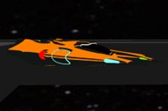

Entity Component System
This game engine was built with C# and uses OpenGL for graphics and
OpenTK for the window and input. The engine has multiple systems and managers
including audio, collision, physics, and rendering systems, and entity, input,
scene, and resource managers. Also, I made a game using the game engine.
The game includes a maze were multiple planets are following
the player and if they come into contact, the player loses a life.
The player can shoot the planets and travel around the maze and
pickup multiple "power-ups" to help survive in the maze.
The structure of the game engine follows an Entity Component System (ECS) design pattern.
This means that everything in the game is an entity, which is essentially a container for components.
Components are simple data containers that store attributes or states,
such as position, velocity, or health. Systems are the logic that processes these components
and perform actions based on the data that the components hold.

Entities
Stop Enemies Power-up

An entity's primary function is to hold components. They also hold a name and a mask which tells the systems
what components the entities have. All entities hold a number of components which have data associated with them which the systems can use to
do calculations relating to the function of the system. For example, all enemy entities have a transform
component which holds the data for the position, rotation and scale of the entity. They also have a collision
component, specifically a collision sphere component which inherits from a base collision component class.
This collision sphere holds the radius of the shpere collider. If an entity has
both a transform and collision component, then the collision system will read the data these components have and
check for collisions. If there has been a collision, it will be recorded in the collision manifold stored
in the collision manager, at which point the appropriate action can be taken.
and the wall.
Components
Components hold data relating to a specific function. For example, a transform component holds 3 sets of 3
values. These values represent the position, rotation and scale of the entity that the component is attached
to. These values can be used by systems for things like collisions neccassary for running a game.
Systems
Systems in the game engine look for entities matching a specific collision mask. If the system finds an entity with
components needed for the system to do its calculations, then the system will read the data from the components
and do its calculations.
Managers
The Managers in the game engine should only hold data, like the collision manager with the collision manifold
for collisions, and be able to manipulate the held data, like the entity manager being able to find an entity
given a name. While building the collision manager for
the game engine I thought it would be best to only record the collisions and not implement any collision
resolutions because that would be game specific, therefore I thought to make the collision manager abstract
so that different games could inherit from the collision manager and implement their own responses to collisions.
In the maze game created with the game engine, if an enemy hits the player, a reset event is triggered which
resets all the entities positions and respawns all enemies and power-ups. However, if the player collides with
a wall, then the player is simply moved along the collision normal by an amount equal to the penetration depth,
which is the distance between the radius of the player and the closest coordinate between the player position